Day 22｜進入倒數 200km、韓國人朝聖之謎
2026 年 6 月 11 日 · Ponferrada → Villafranca del Bierzo · 26km 🍇
第 22 天，天還沒全亮我就出門了。Ponferrada 的聖殿騎士古堡泡在晨曦裡，安靜得有點不真實——昨天它還氣勢磅礡像電影場景，今天清晨卻溫柔得像在目送我們出發。我踩著剛甦醒的光線，繼續往西走，正式進入倒數 200 公里的路段。
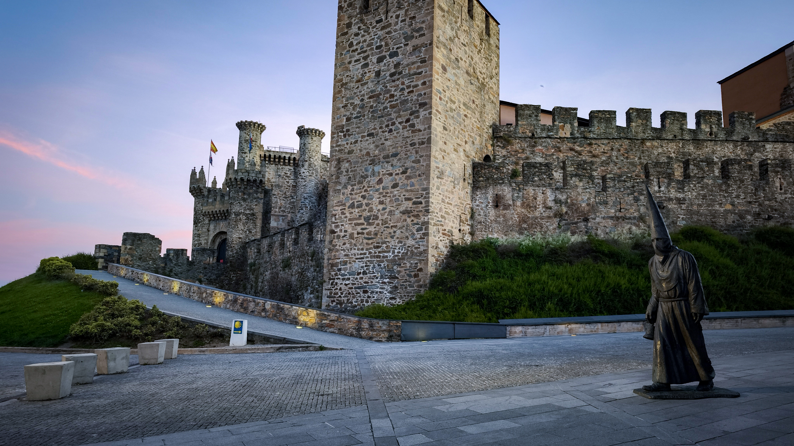
走沒多久，一個路標把我整個人定住——兩公尺高的地方，貼著一張小小的台灣國旗貼紙。我仰頭看了超久，滿腦子只有一個問題：這到底是怎麼貼上去的？難道朝聖者出門都要自備梯子嗎？還是有人直接被隊友抬上去貼的？這個謎，大概跟 Camino 上很多事一樣，永遠不會有答案。
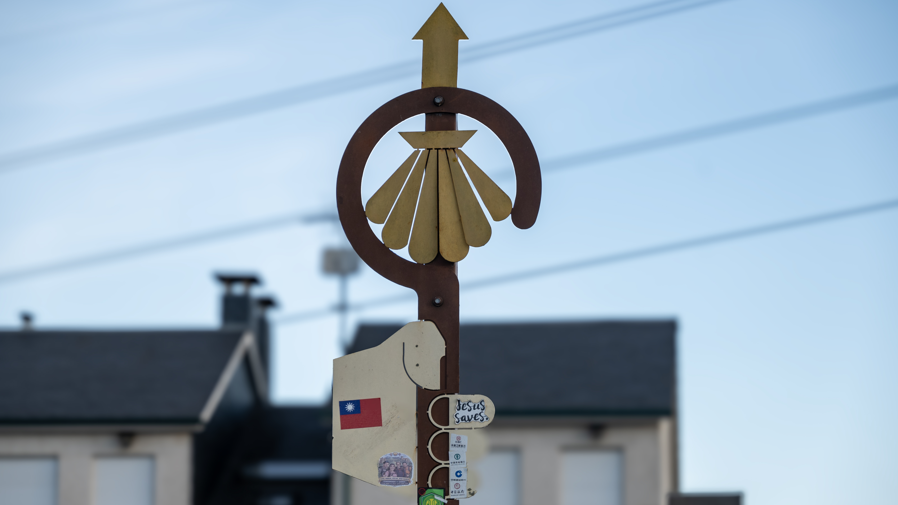
繼續走，抬頭又看到熟悉的鐘牆，頂端站著一隻鳥，一動也不動，完美融入古老的石牆，遠看根本像一尊精心雕刻的石像。我盯著牠看了好一會兒，牠連動都不動一下，演技滿分。朝聖路上就是這樣，總有些莫名其妙的小亮點，莫名其妙就把你逗樂了。
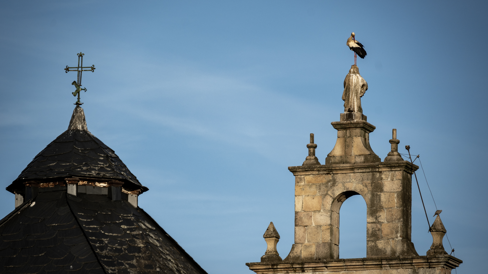
然後，重頭戲來了——最後 200 公里！這裡沒有正式的石碑，里程數字直接印在路邊 Bar 的廣告看板上。老闆真的很懂朝聖者，走到這個階段，不進去喝一杯好像說不過去。好，那就恭敬不如從命，坐下來，用一杯咖啡（或你懂的）慶祝自己走了 600 公里。
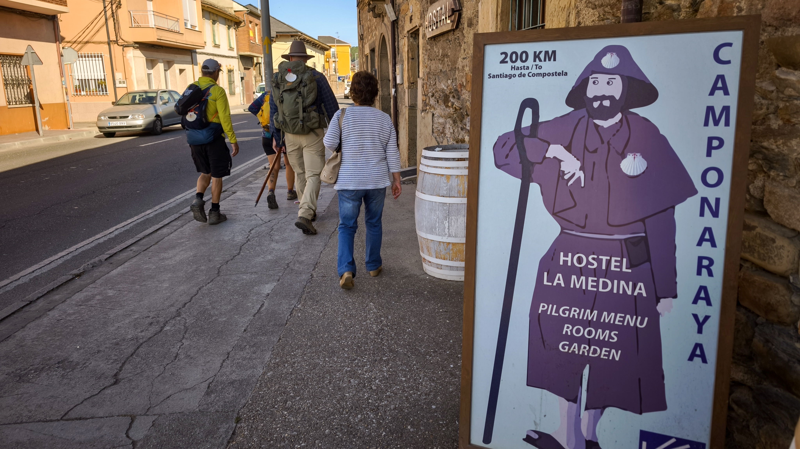
經過 Camponaraya 的路口，目光直接被一座舉重雕像吸走——槓鈴、五環，造型超有氣勢。查了才知道，這裡是西班牙傳奇女子舉重選手 Lidia Valentín 的故鄉，奧運金牌得主！小鎮用一座五環裝置藝術迎接路過的朝聖者，這種在地驕傲，真的很有西班牙小鎮的味道。
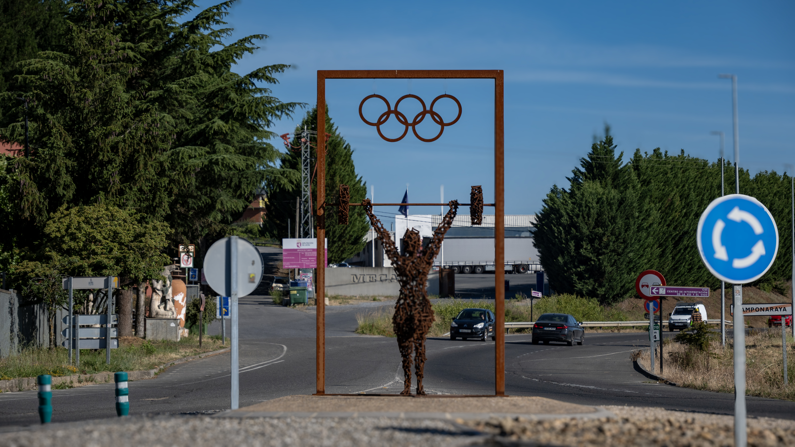
今天還解鎖了一個新單字：Buen día，西班牙文的「祝你有美好的一天」。早上跟庇護所主人學的，馬上現學現賣，一整路逢人就 Buen día，看到朝聖者就打招呼。發音爛沒關係，誠意滿分，對方回你一個笑容，這一天就值了。感受風、感受簡單的快樂，繼續上路！
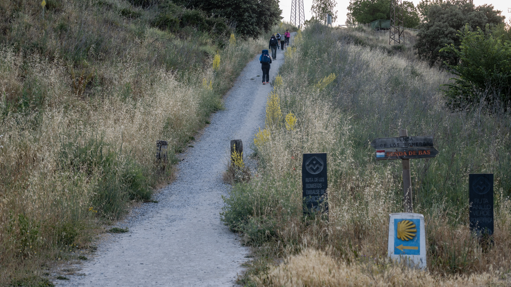
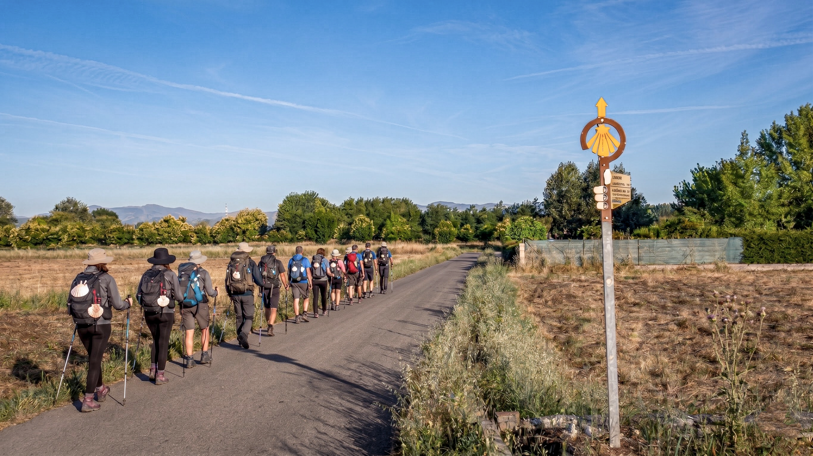
下午的路段美到犯規，兩旁是整片的葡萄田，隨便一拍都像明信片。我跟昨天認識的澳洲台灣人邊走邊聊，正沉浸在田園風光裡，下一秒就被一隻站在二樓狂吠的狗嚇到彈起來——牠半個身體都快探出窗外了，看起來超危險又超好笑。一點驚嚇配滿滿的歡笑，這就是 Camino 的日常調味料。
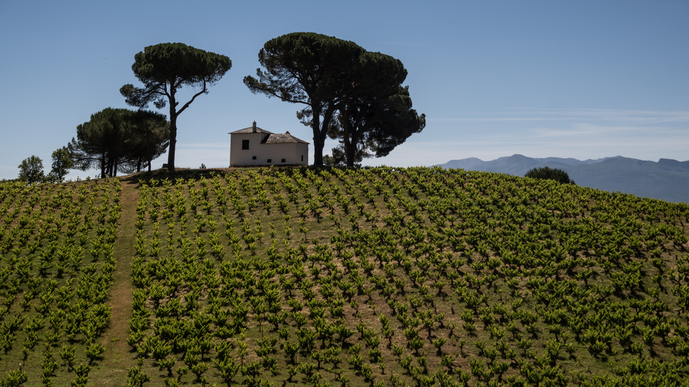
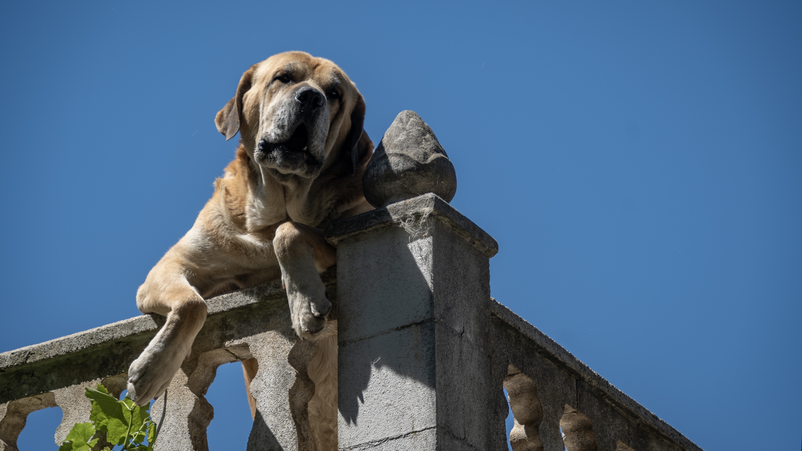
傍晚抵達 Villafranca del Bierzo，今晚的庇護所大有來頭——Albergue San Nicolás el Real。一走進去我就哇出來：充滿歷史感的石拱中庭，配上華麗的階梯穹頂，根本像住進宮殿裡。在朝聖路上睡過體育館大通鋪之後，這種地方真的會讓人懷疑自己是不是走錯棚。
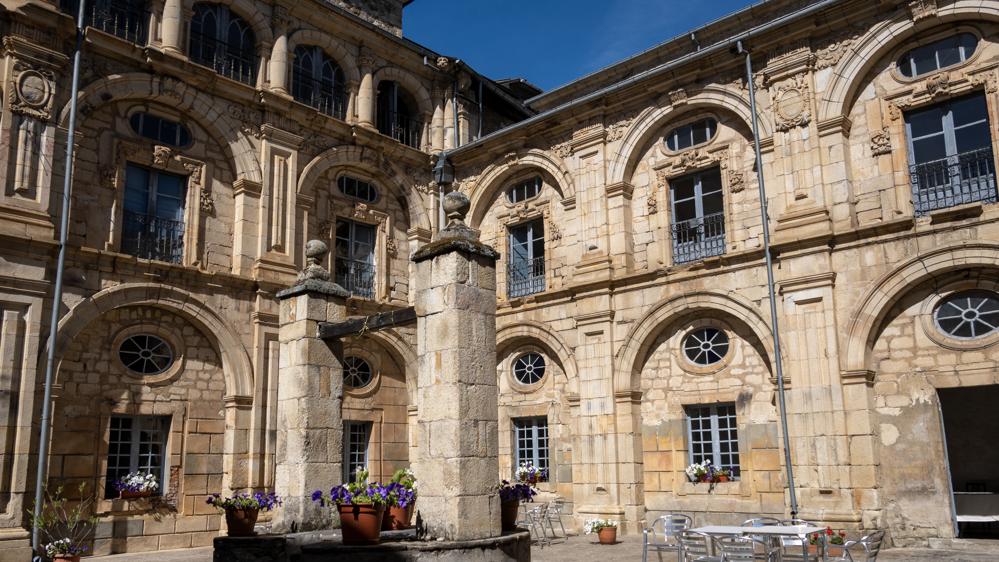
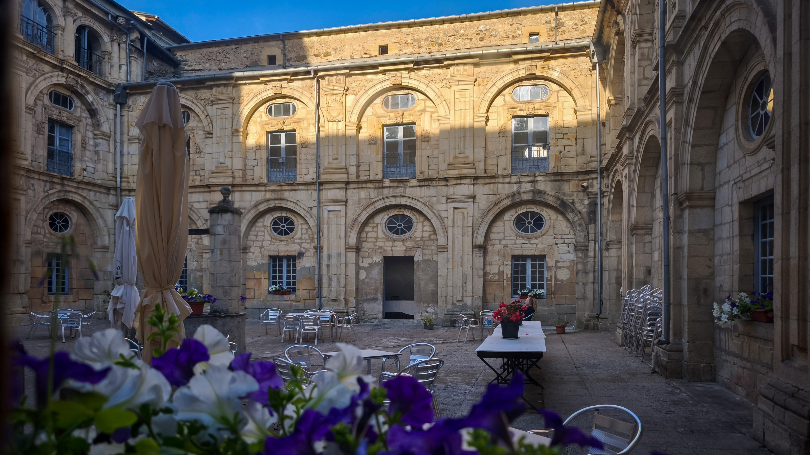
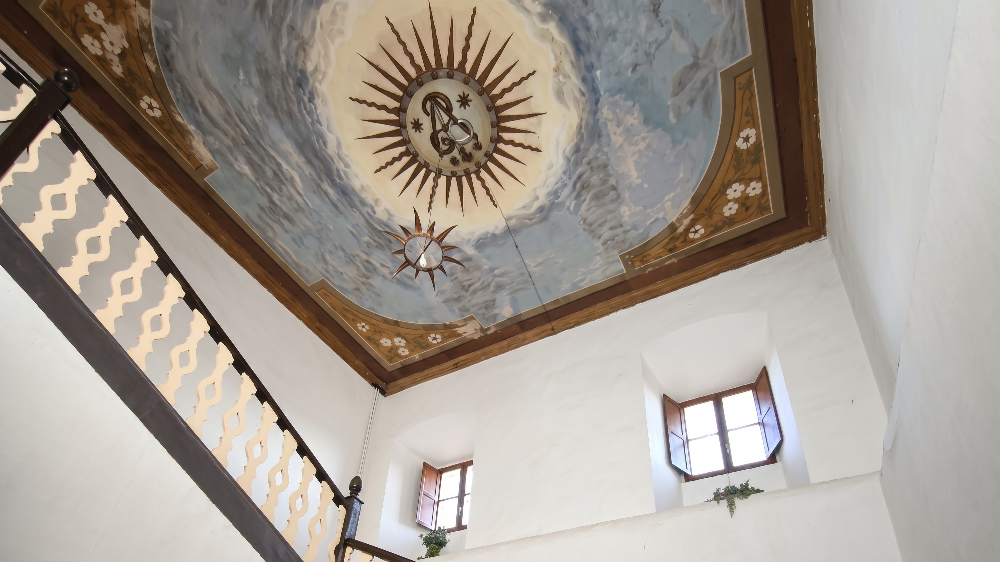
重頭戲在這裡——這間庇護所就是知名韓綜《西班牙寄宿》的拍攝地！如果你好奇為什麼朝聖路上總是遇到超多韓國人，答案很大一部分就是這檔節目，很多韓國人認識這條路都是從它開始的。同行的夥伴站在門口直接開玩笑：「聖地亞哥不是我的終點，這裡才是！」全團大笑。而且這裡只有 10 個床位，能親眼看到節目裡的經典場景還搶到床位入住，這趟真的值回票價。
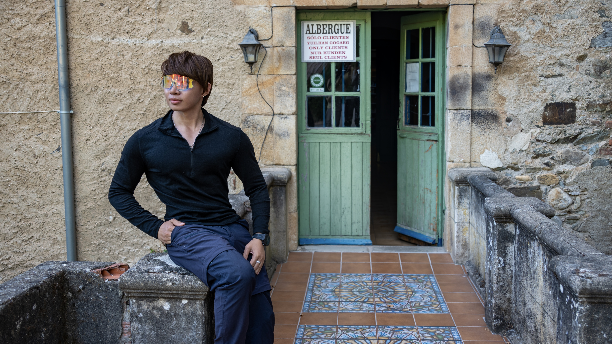
傍晚爬上高處切換上帝視角，俯瞰這座百年修道院庇護所——群山環抱的寧靜小鎮、遠方的古堡剪影，全都泡在金色夕陽裡，宛如一幅中世紀畫卷。本批沒有空拍照，就把這幅畫面留在眼睛裡吧，有些風景相機裝不下，只能用心記。
晚上犒賞自己一盤海鮮飯。當海鮮飯端上桌的那一刻，26 公里的疲勞直接蒸發一半——番紅花香配滿滿海鮮，在修道院小鎮的夜晚裡，這就是朝聖者最樸實的幸福。今天的蛋白質與澱粉，為明天儲滿能量！
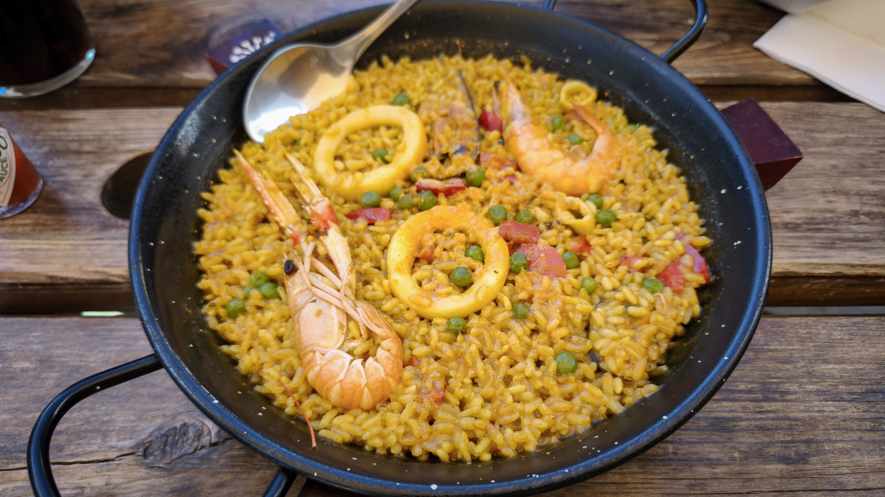
📚 朝聖者小百科：Villafranca del Bierzo
比耶爾索自由鎮（Villafranca del Bierzo）是進入加利西亞前最後一個重要小鎮，藏在群山環抱的 Bierzo 葡萄酒產區裡。鎮上的聖尼古拉修道院（San Nicolás el Real）如今是朝聖者庇護所，石拱中庭與階梯穹頂美得像宮殿。
這裡也是韓國人朝聖之謎的答案——知名韓綜《西班牙寄宿》曾在此取景拍攝，節目播出後掀起韓國人的 Camino 熱潮，路上遇到韓國朝聖者幾乎成了日常風景。庇護所僅有 10 個床位，想朝聖節目經典場景記得早點到。
📺 韓綜《西班牙寄宿》拍攝地，僅 10 個床位
🍷 Bierzo 葡萄酒產區，葡萄田明信片看到飽
🏰 聖尼古拉修道院庇護所，石拱中庭如宮殿
🥾 約 26km · 從古堡晨曦走進倒數 200km 的一天
| 早餐咖啡 | €1.8 |
| 朝聖者餐×2 | €14.5 |
| 皮質小扣子 | €1.0 |
| 細線 | €2.8 |
| 住宿 | €13.0 |
| 超市：沙拉＋優格＋麵包 | €6.0 |
| 合計 | €39.1 |
🎬 對應 Vlog EP6｜濃霧中的鐵十字架！放下石頭後真的會變輕嗎？入住《西班牙寄宿》拍攝地